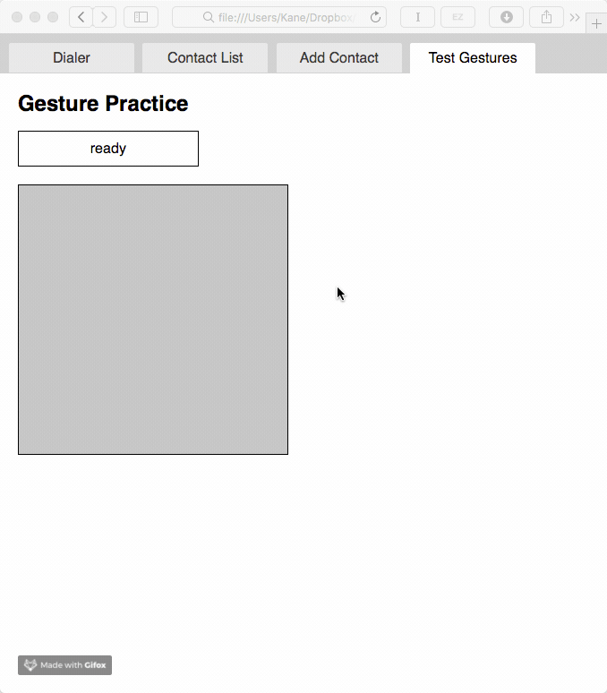

Due Wednesday February 7 at 3pm. It's OK to discuss this project with others as you work on it, but each person needs to complete this assignment.
In this assignment, we will build upon our HTML prototype to add in handling for "mouse events." This will give us some perspective on how software in a modern graphical user interface understands and tracks user input.
This assignment extends the previous assignment. You should create a copy your files from the previous assignment, so you don't overwrite or break your earlier work.
The end result will be a new tab with a "gesture area" that will detect when the mouse button is pressed down, and when the mouse button is released. It will also detect "swipe left" and "swipe right" gestures, when the user presses the mouse button down, moves left or right, and releases the mouse button. We will also add button handlers to our phone dialer.
How do programs track input and gestures, anyway? When you swipe left and swipe right in your app, how is that tracked? What if we want to add a new kind of swipe gesture, like diagonal swipe?
Before the development of modern graphical user interfaces, some programs would track input through polling. In this approach, the program would run on a loop and would continuously track the status of the input devices. Where is the mouse? Is mouse button 1 pressed? Is mouse button 2 pressed? And so on. This can make our code cumbersome, as we need to keep track of all of these possible input events, and could reduce performance, since all programs would independently be tracking these variables.
In modern computer systems, most graphical user interfaces now use event handling to track input events. In this approach, the programmer adds specific code, known as event handlers or event listeners, that specify what the program should do when a specific input action happens. These event handlers can specify a specific type of input event, such as mouse button down, mouse button up, mouse move, key down, and so on. Event handlers can also specify which components of the user interface should listen for that specific event; for example, in most cases we only care when the user clicks the mouse on buttons or other UI elements.
When the user performs the specified action with their input device, such as clicking the mouse button, the operating system (or, in the case of HTML, the browser) "fires" the relevant event, and any event handlers that correspond to that event are then executed.
We've already actually used an event handler in our first GUI assignment. Our program used this JavaScript code:
$("#button_id").click(function() { // when "button_id" is clicked
$("#element").show(); // show element
$("#other_element").hide(); // hide other element
});In the above example, we are telling the browser to run that code when a specific event happens in a specific UI component: in this case, when a mouse click happens within the button with the ID button_id. We can change the event handler to change either the event tracked, or the UI element tracked. For example, replacing the function click with dblclick would then activate this code only when the button is double clicked. You might want to try this with your existing prototype.
A limitation of this event-handling approach is that our code is restricted to the types of events that the underlying system defines. For example, although HTML and JavaScript support single and double click, we could imagine wanting to track whether the user quadruple-clicked a button (in other words, clicked it four times). That's probably a bad idea for most user interfaces, but there may exist some reason for this. What do we do then? One way to handle this situation, that is often used in UI prototyping, is to hack together our own event handler. For example, for quadruple click, our code might keep track of the number of clicks, and do something only after four clicks have happened. Here is a pseudocode sketch of how that would work:
var numberOfClicks = 0
on click:
numberOfClicks = numberOfClicks + 1
if numberOfClicks == 4:
do something
on mousemove:
numberOfClicks = 0 // moving the mouse cancels our quadruple click
on timeout:
numberOfClicks = 0 // our click counter resets after a timeoutSo what we will do now is add event handlers to our phone dialer buttons so that they work. Then we will add a new tab to test out some of our event handling capabilities.
We will add button handlers to our 12 phone key buttons, and the clear button, using the click event. For now, the dial button doesn't need to do anything.
We already used a button handler in our original project to switch tabs. You will adapt that code for the buttons.
So we know how to add a click handler to our phone keypad buttons. But what should it do? We want it to work like a real phone app, so that each time you press a button, that number is added to the number being dialed. Like almost everything else, this is a little tricky in JavaScript, so we'll do this in two steps.
First, let's just figure out how to set the text inside our phone input area. To do this, we will use the JQuery function called val. This same function allows us to both read and set the value of any object in our HTML document, including div tags, input tags, and others.
For example, let's say we have an input element in our prototype with the ID fruit, and the user has typed the word "banana" into that input box. If you wanted to know what was in the input box, you could use the code $("#fruit").val().
To test this out, you could use the JavaScript alert function. This function is used to pop up a window with a specified message. This function is worth knowing for debugging your code. For example, if you're not sure whether your JavaScript code is loading, you could add the line alert("hello world") to your code. If the code is loading and being called, that function will pop up. We could also use this function to see what's inside our input box, as in alert($("#fruit").val()), which would pop up whatever is inside the "fruit" input box, in this case, "banana".
We also use the val function to set the value of an HTML object. For example, if we wanted to change the contents of "fruit" to "kiwi", we could write $("#fruit").val("kiwi").
Given this information, you could now use your knowledge of the click function, and the val function, so that when you click a button on the keypad, that number appears in the phone input box. You should try this.
The problem with this approach, as you will see right away, is that each time we add a number to our input box, we erase the old one. To fix this, we need to set the content of the input to be whatever is in there already, plus something else. So, if we wanted to add "kiwi" to our fruit input, we would write something like:
$("#fruit").val($("#fruit").val() + "kiwi")To clear the input, we can set the value of the input to "" (the empty string).
This is all you need to make your dialer work, so go for it.
In the next step, we will add a new tab to our program to test out gestures. We'll test out swipe left and swipe right gestures. We could do this on the main user interface, but since it's more complicated to track gestures across different parts of the UI, we'll make a new tab just for testing out gestures.
Add a new, fourth tab to your user interface. As before, you'll need to add a button representing the tab, and a div to represent the content. In that div, you should add two controls: an input field (which I called gesture_output), that will show our program output, and a div representing our gesture area (which I called gesture_area). You will want to make the gesture area big enough to click with the mouse; you can specify the size, shape, and color in the .css file. In my example, I used a width of 300px, a height of 300px, and a background silver. You can style yours however you'd like, but it should be obvious where the boundaries of this area are.
We will write code to track when the user presses the mouse button within the gesture area, and when the user raises the mouse button within the gesture area. When these happen, we will write "mouse down" or "mouse up" in the gesture output area to show that we have correctly recognized the input event. (Later, we will use this to recognize gestural swipes in which the user presses the mouse button, drags the mouse left or right, and then raises the mouse button.)
So how do we do that? Just as we used the click function to react to clicks on our user interface, we will use the mousedown and mouseup functions to track mouse interactions on the gesture area. Instead of showing and hiding parts of the user interface, we will (for now) report the gesture that has been performed in the gesture_output box. The JQuery mouse events page shows all of the mouse gestures that we can recognize when we use the JQuery library, as we do here.
Given what you know already, you could add a click function handler to your gesture area. On click, you could show a message using alert or show or hide some content. If you can add a click handler to your gesture area, you're most of the way there.
For this assignment, you should add both a mousedown and a mouseup function for your gesture area. Inside these functions, add code to write "mouse down" and "mouse up" in the gesture_output box as we did for the dialer. Note that these functions are only called when the mouse events happen inside the gesture area: if you mouse down inside the gesture area but mouse up somewhere else, the mouse up will not be detected.
All right, the last step! For this step, we are going to track two mouse gestures: swipe left and swipe right. To perform these gestures, the user will press the mouse button down, move the mouse to the left or right, and release the mouse button.
We do not have built-in events for these gestures, so we will code them ourselves. How are we going to do that? In a way that's pretty hacky, but useful for prototyping. What we'll do is, when the mouse button is pressed down, we will keep track of the X and Y coordinates the mouse is at. When the mouse button is released, we'll look at the location again. If the mouse has moved left (the X coordinate is less than it was before), it's a swipe left, and we will write "swipe left" in the output box.. If the mouse has moved right (the X coordinate is higher), it's a swipe right and we will write "swipe right". If the mouse hasn't moved left or right, we'll just write "mouse up" as we did before.
The pseudocode for this is similar to the quadruple-click example we discussed previously:
downX = 0
downY = 0
on mouse down:
downX = current X position
downY = current Y position
on mouse up:
upX = current X position
upY = current Y position
if upX < downX:
output "swipe left"
else if upX > downX:
output "swipe right"
else if upX == downX:
output "mouse up"
that the mouseX and mouseY variables must be initialized outside the mousedown and mouseup functions, so we can access them in both functions. We don't actually need to store the Y coordinate for now, but we might as well do so, in case we need it later.
There's only one more thing we need to know. How do we know where the mouse pointer is? For that, we will change our event handling function slightly so that we can access this information. We will use the variables event.pageX and event.pageY to refer to the position of the mouse when the event occurs. In this case, the X position of the mouse is reported as the number of pixels from the left edge of the HTML window (pageX), and the Y position is reported as the number of pixels below the top edge of the HTML window (pageY). Sometimes it matters from where we are measuring the location of an event, but in this case we are comparing two mouse positions, so it doesn't matter.
We will need to make one more change to our mousedown and mouseup functions so that we can access the mouse position. What we need to do here is add the variable event inside our function. For example, we would start our mousedown function like so:
$("#objectId").mousedown(function(event)) {
// the rest of our codeNote the addition of the variable event to the first line of our function. That tells JavaScript that we want to receive all of the details about the mouse event, and that they should be placed in a variable named event. If we forget to do this, our JavaScript code will not be able to find the event.pageX or event.pageY variables. (You don't actually have to name this variable event, you could call it whatever you want).
If you feel stuck on how to do this, you might want to read over the examples from the JQuery API documentation for the mousemove function. All of the mouse related functions can use this event variable, but the JQuery documentation isn't very good and only demonstrates this capability for mousemove.
That's it! You should now be able to switch between tabs, and recognize swipe left and swipe right mouse gestures. It may have been painful at times to get here, but now you can use HTML and JavaScript to create a clickable prototype that includes working buttons and detecting gestures. Give yourself a high five.
If you want to take this a step further (especially you found this easy), you could do the following:
Submit your prototype via Moodle. You just need to submit the URL. This time (and for future assignments), don't submit the URL to the GitHub repository; instead, submit the URL for the HTML site on GitHub Pages. In other words, when someone clicks on the URL, they should see your Assignment 2 interface, not the GitHub repo. The URL will be something like user_name.github.io/project_name/. If you're stuck here, follow the instructions on GitHub Pages